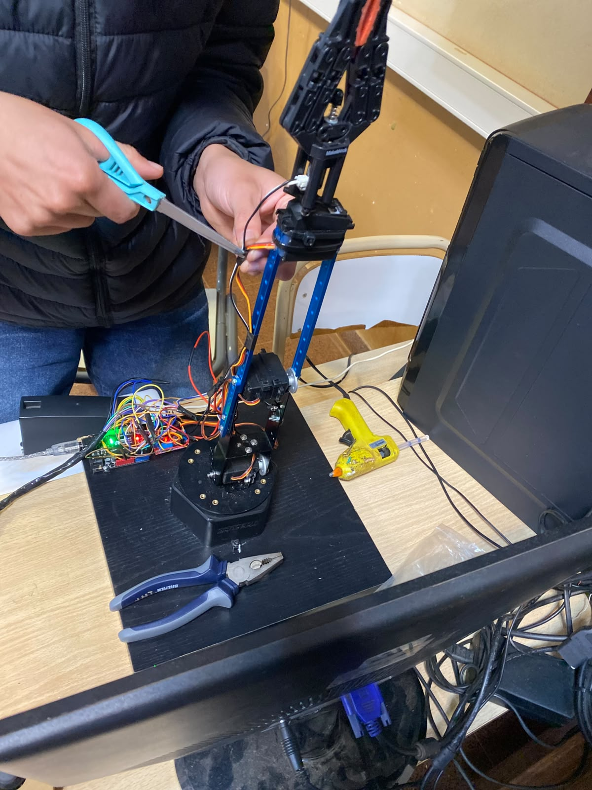
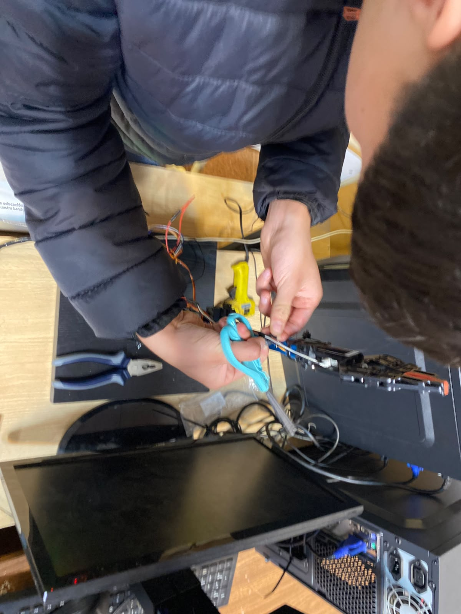
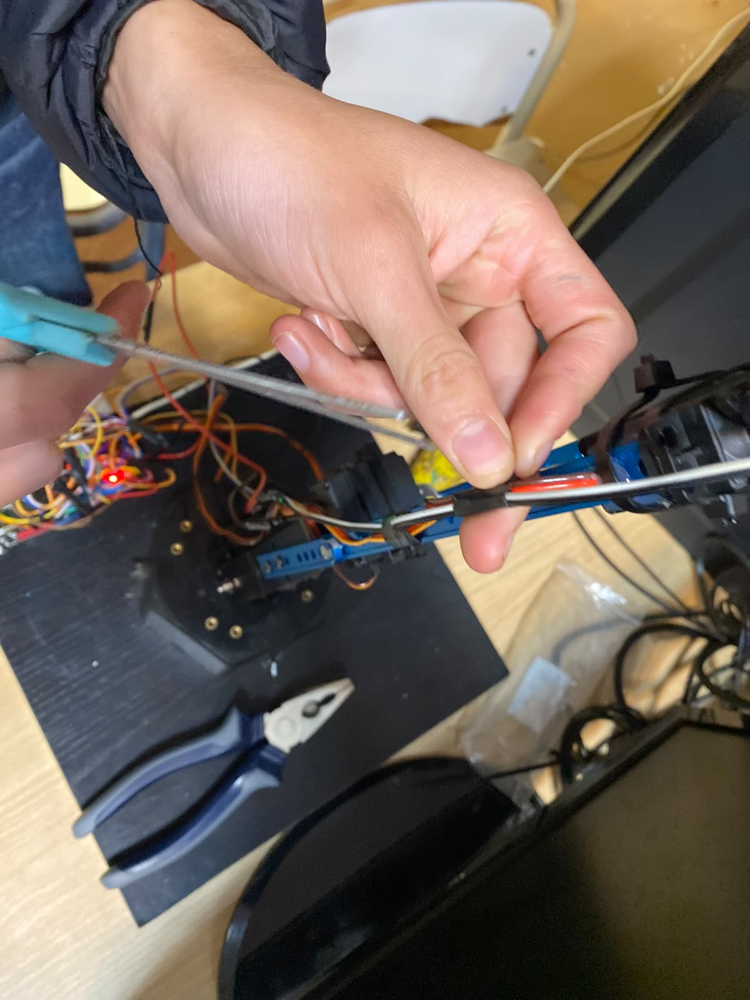
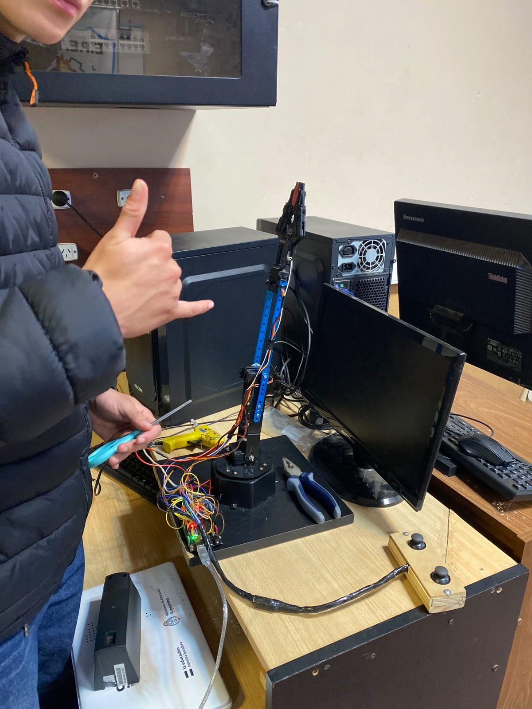

PASO 1
Base y estructura
Arreglos del brazo robótico.
// Proyecto de robótica
Del primer tornillo al primer movimiento. Mirá cómo cobra vida cada pieza, paso a paso.
Ver el proceso ↓Resumen completo del armado y las primeras pruebas.
Cada etapa del armado, desde la base hasta la pinza.

Arreglos del brazo robótico.

Más pruebas y arreglos al brazo robótico.

Ordenado del cableado y pintura de la base del brazo.

Comprobación de los ángulos del brazo y de sus funciones.
Todo lo que necesitás para construir y programar el brazo.
Hacé clic en cualquier foto para verla en grande.